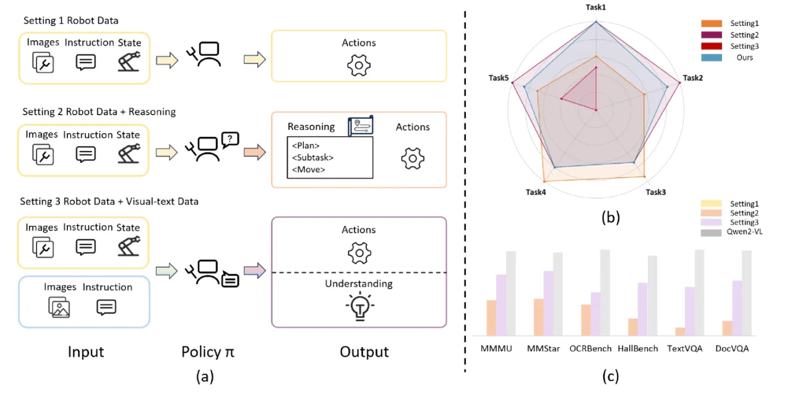
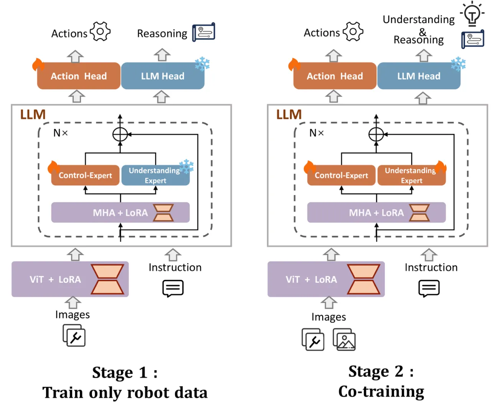
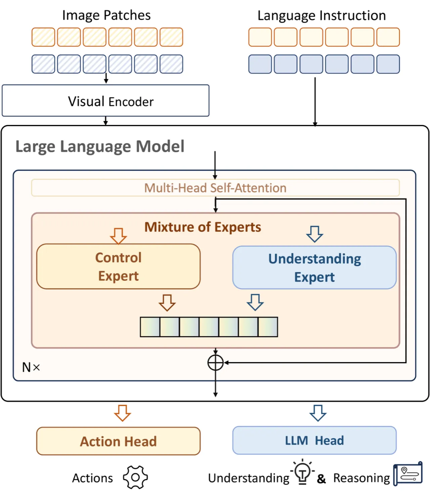
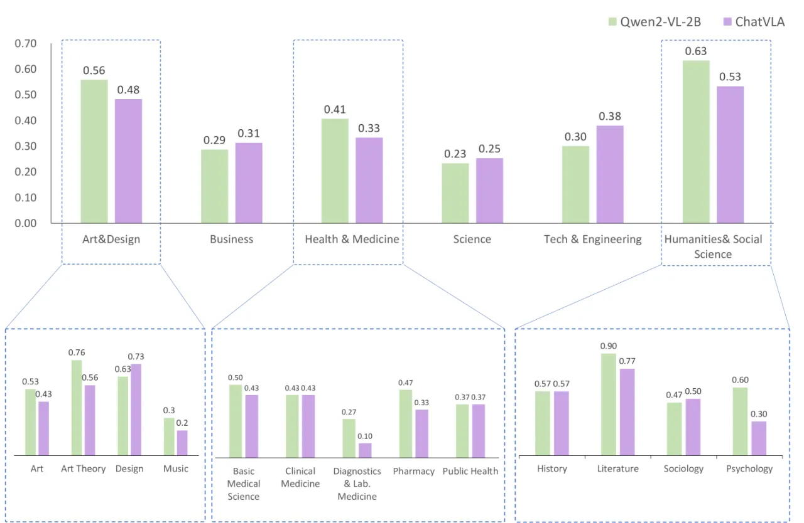
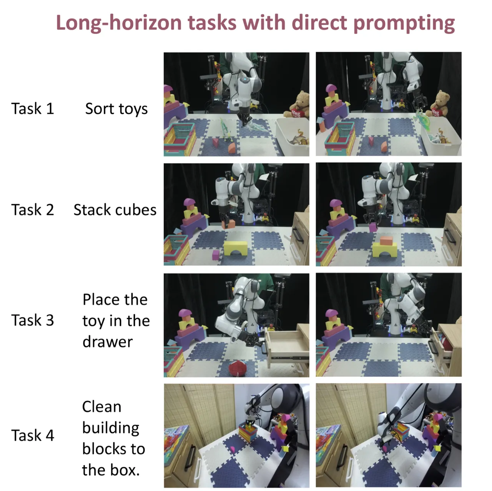

ChatVLA 提出统一的 Vision-Language-Action 框架，通过分阶段对齐训练（Phased Alignment Training）与混合专家架构（Mixture-of-Experts），同步解决 VLA 模型中的"伪遗忘"与"任务干扰"两大痛点，在多模态理解与真实机器人操作两个维度均达到 SOTA 水平。
现有 VLA 模型在机器人控制与多模态理解之间存在根本性矛盾：擅长底层操作的架构往往丧失视觉-语言对齐能力，而强大的 VLM 又缺乏物理交互能力。作者通过系统分析训练范式，识别出两大核心挑战。
"Through a systematic analysis of existing training paradigms in vision-language-action models (VLA), we identify two key challenges: spurious forgetting, where robot training overwrites crucial visual-text alignments, and task interference, where competing control and understanding tasks degrade performance when trained jointly."

机器人数据微调过程中，模型会覆盖预训练阶段习得的视觉-文本对齐能力。即便使用 LoRA 等参数高效方法，这种遗忘现象依然存在，导致 VLA 在多模态理解基准（如 MMMU、TextVQA）上性能几乎归零。
当控制任务与理解任务同时训练时，二者的梯度方向相互冲突，导致两端性能均出现退化。这与 Dual Coding Theory（双编码理论）的预测一致——不同模态的信息在大脑中由独立通道处理。
ChatVLA 提出两项互补的创新：Phased Alignment Training（分阶段对齐训练）解决伪遗忘问题，Mixture-of-Experts (MoE) 架构解决任务干扰问题。两者共同实现多模态理解与机器人控制的统一。

直接将机器人数据与视觉-文本数据混合训练会导致两类任务相互拖累。ChatVLA 的解决思路是：先专注控制，再逐步引入理解。第一阶段让模型在机器人轨迹上充分优化，建立稳固的动作预测能力；第二阶段再以合理的数据比例混入视觉-文本数据（论文发现 1:3 的视觉-文本:机器人数据比例最优），"渐进式"地恢复多模态对齐能力，而不损害已学到的控制策略。

受 Dual Coding Theory 启发，ChatVLA 在每个 Transformer 块中设置两类专家（Expert）：
与 Dense MoE（所有 token 使用全部专家）不同，ChatVLA 的路由策略是确定性的——机器人 token 只走机器人专家，视觉-文本 token 只走理解专家，避免了 top-k sparse routing 带来的负载均衡问题。
实验分两部分：（1）在13个多模态理解基准上与 Qwen2-VL、OpenVLA、ECoT、DiVLA 对比；（2）在25项真实机器人任务（长时序操作 + 跨技能多任务）上与 Octo、OpenVLA 对比。所有机器人实验均在真实物理环境中进行，无仿真。
| Method | #Params | MMMU | MMStar | TextVQA | DocVQA | MME | OCRBench | HallBench |
|---|---|---|---|---|---|---|---|---|
| Qwen2-VL | 2B | 41.1 | 48.0 | 79.7 | 88.57 | 1872.0 | 809 | 41.7 |
| OpenVLA | 7B | 0 | 0 | 0 | 0 | 0 | 0 | 0 |
| ECoT | 7B | 5.4 | 0 | 0 | 0 | 0 | 12 | 0.9 |
| DiVLA | 2B | 17.2 | 21.1 | 7.5 | 15.2 | 186.5 | 294 | 9.0 |
| ChatVLA (Ours) | 2B | 37.4 | 47.2 | 71.2 | 83.3 | 1435.2 | 729 | 39.9 |
ChatVLA 在大多数理解基准上远超同等参数的 VLA 竞品（OpenVLA、ECoT、DiVLA），并接近纯 VLM 基线 Qwen2-VL。在 MMMU 上实现 37.4 vs. ECoT 的 5.4（约 6 倍提升）；在 TextVQA 上达到 71.2（OpenVLA 为 0）。

| Method | Task 1 平均成功长度 | Task 2 | Task 3 | Task 4 |
|---|---|---|---|---|
| Octo | 0.08 | 0.21 | 0.11 | 0.33 |
| OpenVLA | 0.06 | 0.29 | 0.15 | 0.42 |
| ChatVLA (Ours) | 0.54 | 0.64 | 1.00 | 0.75 |
| Method | Bathroom (Tasks 14-17) | Kitchen (Tasks 18-19) | Tabletop (Tasks 20-25) | Total |
|---|---|---|---|---|
| Octo | 4/34 | 4/18 | 10/55 | 18/107 |
| OpenVLA | 3/34 | 5/18 | 12/55 | 20/107 |
| ChatVLA (Ours) | 16/34 | 12/18 | 27/55 | 55/107 |

论文对视觉-文本数据与机器人数据的比例进行系统消融（1:1 / 3:1 / 1:3）：
| Ratio (VT:Robot) | MMMU | MMStar | TextVQA | DocVQA | MME |
|---|---|---|---|---|---|
| 1:1 | 36.1 | 44.7 | 72.6 | 82.9 | 1426.9 |
| 3:1 | 35.3 | 45.3 | 72.7 | 83.6 | 1399.5 |
| 1:3（最优） | 37.4 | 47.2 | 71.2 | 83.3 | 1435.2 |
结果表明，1:3 的视觉-文本:机器人数据比例在多数理解基准上取得最优，同时维持机器人任务成功率。增大视觉-文本比例（3:1）不仅未能进一步提升理解性能，反而对 MMMU 等指标略有损害。
论文明确指出：ChatVLA 在 MMMU 的艺术理论（Art Theory）、实验室医学（Lab Medicine）、药学（Pharmacy）、文学（Literature）、心理学（Psychology）等专业类别上与 Qwen2-VL 仍有明显差距，原因是训练所用的 LLaVA 数据集对这些专业领域的覆盖有限。作者表示"carefully curated data is crucial for mitigating spurious forgetting, a topic we plan to explore in future work"。
尽管 ChatVLA（2B）在多数基准上远超同类 VLA，但与同等参数的纯视觉语言模型 Qwen2-VL-2B 相比仍有差距（例如 MMMU：37.4 vs. 41.1；TextVQA：71.2 vs. 79.7）。引入机器人控制能力本身仍会带来一定的理解能力损耗。
ChatVLA 的 MoE 路由采用基于 token 类型的确定性分配（机器人 token → 机器人专家，视觉-文本 token → 理解专家），这简化了训练但也限制了模型在混合任务场景下的灵活性。对于需要同时融合动作预测与语言推理的复杂指令，固定路由可能不是最优方案（inferred）。
尽管论文在真实物理环境（浴室、厨房、桌面）中进行了25项任务的评估，但每项任务的试验次数有限，且场景多样性相对受控。方法在更大规模、更开放环境下的泛化能力尚待验证（inferred）。